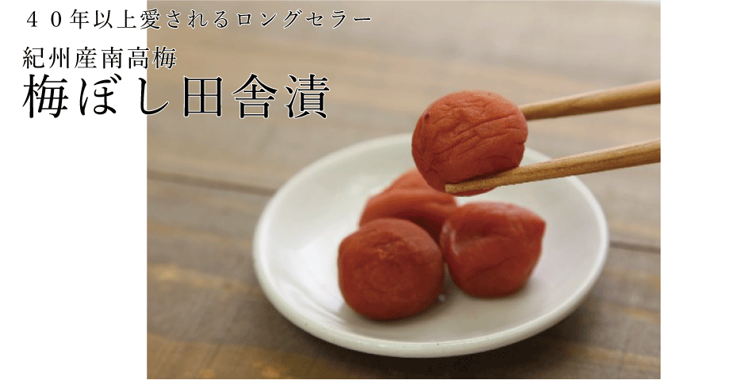

お米屋さん推薦の味
豊岡市のブランド米 六方銀米
全国農業コンクール農林水産大臣賞受賞を受賞した兵庫県豊岡市中谷の米農家が丹精込めて栽培したブランド米「六方銀米」は、ツヤツヤの炊き上がりと、通常のコシヒカリよりも強い粘りが特徴です。

香りもよく、粒もしっかりと揃ったお米はどんな料理とも相性抜群です。冷めた状態でも風味は落ちませんので、おにぎりやお弁当にも最適です。
知ってほしい
産地のこと
現在、豊岡市は生物多様性を視野に入れた減農薬米の取り組みが全国一進んでおり、環境に配慮した田んぼには、毎日のようにコウノトリが舞い降ります。
一級河川の円山川沿いの土壌はお米作りに最適な重粘土質。良質な水と気候、人も動物も住みやすい自然環境で栽培された六方銀米は安心と作り手のまごころが込められています。
箸が止まらない
ご飯に合うおかず
４０年以上愛されるロングセラー
紀州産南高梅梅ぼし田舎漬

梅ぼし田舎漬は、か
つお節の旨味でまろ
やかに仕上げた梅干
しです。
桃のような甘いフ
ルーティーな香りの
南高梅の柔らかい薄
皮と肉厚でとろっと
した果肉をご堪能
下さい。
４０年以上愛され続
け２０１４年度シリー
ズ累計１３，０００
０個を売り上げまし
た。
ご自宅用はもちろん
大切な先様にお
届けするギフトとし
てもおすすめです。
伝統の老舗が作る格別の味
博多直送二段仕込み明太子
博多の老舗「徳永」
は、実に創業５０余
年。大量生産に向か
ない手作業での明太
子づくリにこだわリ
続けています。極上
のプリプリとした食
感は徳永だからなの
です。
量産品とは一線を
画す、味わい深い辛
子明太子は最初に
甘さ、次に辛さ、最
後にまろやかなかつ
お風味がフワッと香
るたとえようのない
逸品をお届けしま
す。
香川県三豊市産の食味豊かななめたけ
食卓を彩る美味しいもの
本鷹なめたけ/竹の子なめたけ